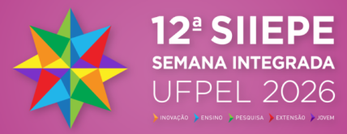
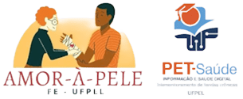
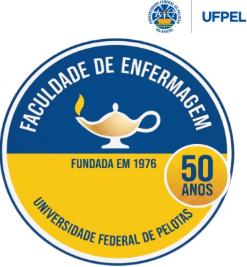
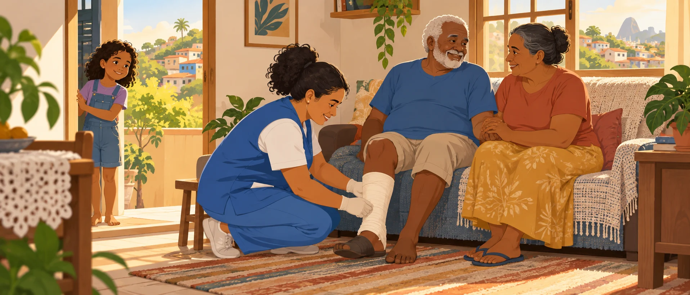

O que o PET-Saúde Feridas Crônicas leva ao 12ª SIIEPE
Dezoito trabalhos sobre o cuidado a pessoas com feridas crônicas em Pelotas, do ambulatório ao Instagram, da revisão de literatura ao sistema que registra cada atendimento. Leia o que cada um encontrou, veja como eles conversam e saiba onde assistir, de 9 a 13 de novembro.


O que os trabalhos mostram
Alguns números tirados dos próprios artigos. Cada um leva à ficha do trabalho que o produziu.
Dois retratos do mesmo ambulatório
Dois trabalhos descreveram, de forma independente, os pacientes que chegam ao ambulatório de feridas complexas. Os recortes são diferentes, mas o retrato coincide: a úlcera venosa lidera, seguida pelas arteriais e pelo pé diabético.
É o tipo de relação que só aparece lendo os textos completos, e é o que a aba Conexões mostra para o conjunto dos 18 trabalhos.
Cinco frentes de trabalho
Os eixos são uma leitura editorial que agrupa os trabalhos para facilitar a navegação.
Por que feridas crônicas
Uma ferida crônica é uma lesão que não cicatriza no tempo esperado e pode ficar aberta por meses ou anos. Ela dói, limita a rotina, exige curativos frequentes e pesa sobre a pessoa, a família e o serviço de saúde.

dos idosos avaliados na atenção básica tinham ferida crônica, segundo um estudo citado por dois dos nossos trabalhos.
Telemonitoramento na atenção básicadas pessoas que chegam ao ambulatório de Pelotas têm outras doenças crônicas, como hipertensão e diabetes.
Tipos de feridas crônicasfazem o curativo em casa, longe do serviço, o que torna o acompanhamento a distância tão importante.
SAFC em Google Apps ScriptOnde tudo começou
O esforço nasceu no Amor-à-Pele, projeto de extensão da Faculdade de Enfermagem da UFPel dedicado ao cuidado integral de pessoas com lesões cutâneas na rede de saúde de Pelotas, registrado em maio de 2023. O projeto é coordenado pela professora Adrize Rutz Porto, que também coordena o PET-Saúde Feridas Crônicas, e tem como coordenadora adjunta a professora Marina Soares Mota, estomaterapeuta. Foi ali que professoras de enfermagem da UFPel juntaram estudantes, pesquisa e assistência em torno de um mesmo problema, e foi ali que se formou o conhecimento que hoje sustenta o grupo.
Do outro lado estavam as enfermeiras da Prefeitura de Pelotas, que conheciam de perto a rotina das pessoas com feridas nas unidades de saúde e sonhavam com um serviço especializado para a cidade. Desde 2023, o município já acompanhava esses casos de forma descentralizada, por telematriciamento e com o apoio das UBS, e o Amor-à-Pele foi pensado desde o início em parceria com essa equipe municipal.
O PET-Saúde juntou essas duas forças: a potência intelectual da universidade e o desejo de quem cuida todos os dias no SUS. Em maio de 2026, o sonho ganhou endereço, com a inauguração do Ambulatório de Feridas Complexas no Centro de Especialidades.
Linha do tempo
- Maio de 2023
Nasce o Amor-à-Pele, projeto de extensão da Faculdade de Enfermagem da UFPel coordenado pela professora Adrize Rutz Porto.
- 2023
Pelotas passa a acompanhar pessoas com feridas de forma descentralizada, por telematriciamento e com apoio das UBS. Telemonitoramento com o SAFC
- 2025
O edital do PET-Saúde Informação e Saúde Digital abre espaço para o grupo de telemonitoramento de pessoas com feridas crônicas.
- Setembro de 2025
Começam a tutoria e as ações assistenciais do grupo na UBS Sansca.
- Novembro de 2025
O grupo estreia seu perfil no Instagram para divulgar informação sobre feridas. Feridas e cicatrização no Instagram
- 6 de maio de 2026
É inaugurado o Ambulatório de Feridas Complexas da Prefeitura, e o sistema de registro SAFC entra em uso. SAFC em Google Apps Script
- Maio a agosto de 2026
O serviço soma 924 atendimentos, 144 deles por telematriciamento. Telemonitoramento com o SAFC
- Novembro de 2026
O grupo leva 18 trabalhos ao 12ª SIIEPE. Ver a agenda


Agradecimentos
À Dra. Gabriela Carpena Schramm Coelho, que na época atuava como médica da Estratégia Saúde da Família na UBS Sansca, e à enfermeira Alini Silveira Duarte, coordenadora da unidade. Em setembro de 2025, elas abriram as portas da UBS Sansca para a tutoria e as ações assistenciais do PET-Saúde Feridas Crônicas, quando o projeto dava os primeiros passos.
À Prefeitura Municipal de Pelotas e, em especial, à enfermeira Lilian Rubira, que da mesma forma abriram as portas do Ambulatório de Feridas Complexas, recém-inaugurado em maio de 2026.
Sem essas portas abertas, boa parte dos trabalhos reunidos nesta página não existiria.
Os 18 trabalhos
Escolha um trabalho para ler o que ele buscou, como fez, o que encontrou e com quais outros trabalhos conversa.
Como os trabalhos se conectam
Cada arco liga dois trabalhos e diz por quê. Os diálogos vêm da leitura dos textos completos; as referências em comum e a coautoria são calculadas a partir dos próprios artigos. Toque em um trabalho para ver as ligações dele.
Quem escreveu
As 19 pessoas que assinam os trabalhos. No centro, a coordenação; no anel do meio, as profissionais da Prefeitura de Pelotas; por fora, a UFPel. O tamanho de cada círculo indica quantos trabalhos a pessoa assina, e as linhas ligam quem escreveu junto. Toque em alguém para ver seus trabalhos e parcerias.
Quando e onde apresentamos
Todas as sessões são no Campus Anglo. A grade vem da programação oficial do CEC, do CEG e do CIC, conferida em 23/10/2026; ela pode mudar, então confirme perto do evento.
Como esta página foi feita
A base são os textos completos dos 18 trabalhos do PET-Saúde Feridas Crônicas aprovados no 12ª SIIEPE, nas versões em Markdown ligadas à planilha de apresentações do grupo, e a grade de horários dessa mesma planilha. Os PDFs não foram necessários, porque os artigos quase não têm figuras com dados.
Cada ficha resume o objetivo, o método, o cenário, os principais achados e a contribuição declarados pelos autores. Os números citados são os que aparecem nos artigos; nenhum foi recalculado.
Os três tipos de ligação
Diálogos são relações de conteúdo identificadas na leitura dos textos: dois trabalhos que descrevem o mesmo serviço por ângulos diferentes, que usam a mesma arquitetura técnica, ou em que um produz algo que o outro usa. Cada diálogo traz a frase que o justifica.
Referências em comum ligam dois trabalhos que citam a mesma fonte. Doze referências aparecem em mais de um trabalho, entre as 143 citações do conjunto.
Coautoria liga trabalhos que têm ao menos uma pessoa em comum, sem contar a coordenação (Adrize Rutz Porto e Alejandro Martins Rodriguez), que assina quase todos e apagaria as demais relações.